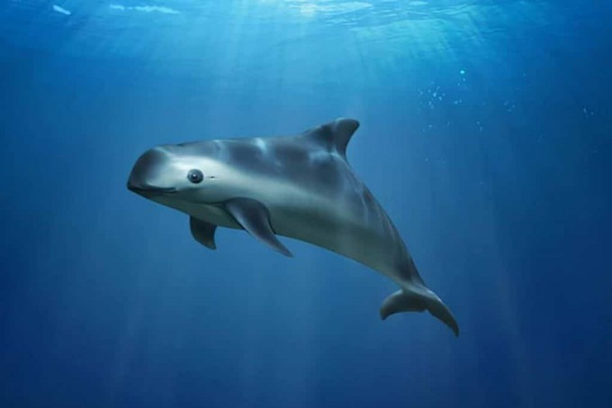
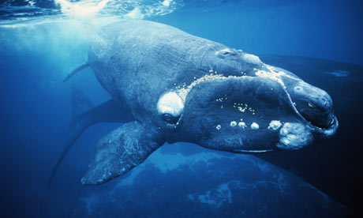
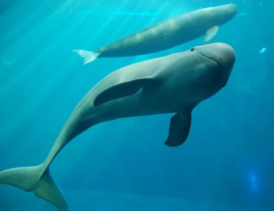
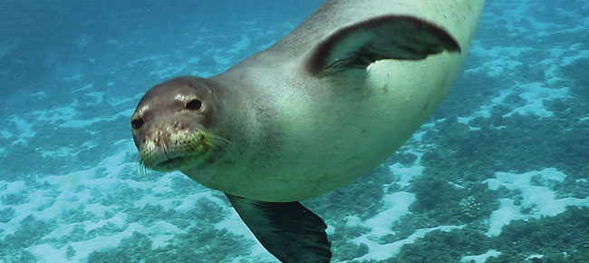
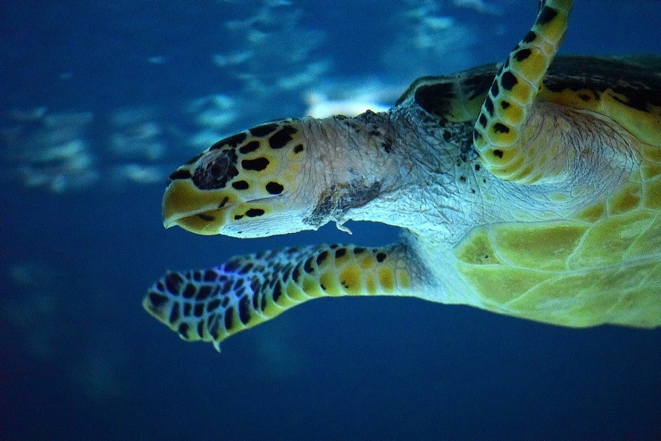
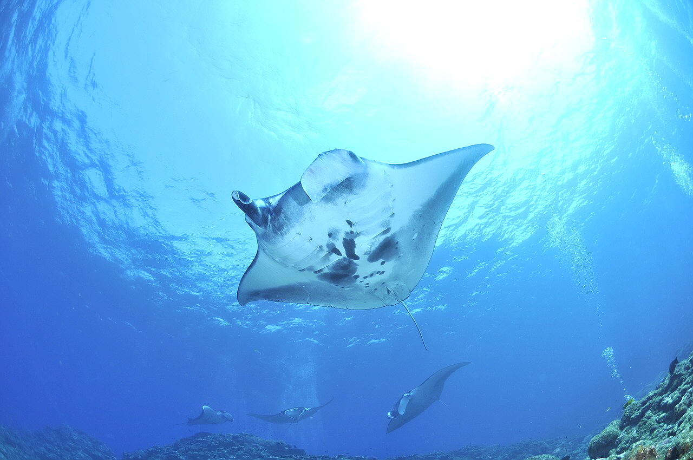
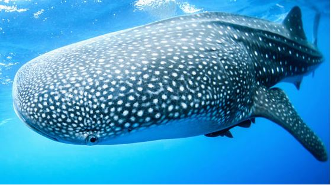

| 해양생물 | 학명 | 수명 | 크기 | 서식지 |
|---|---|---|---|---|
| 바키타 돌고래 Vaquita |
Phocoena Sinus | 20년 | 1m 50cm | 멕시코 연안 |
| 긴수염 고래 Right Whale |
Balaenoptera Physalus | 50 – 70년 | 13 – 16m | 북태평양, 동해 |
| 양쯔강상괭이 East Asian Finless Porpoise |
Neophocaena sunameri | 20년 | 1m 50cm – 1m 90cm | 양쯔강 1,700km 구간, 포양 호, 동팅 호 |
| 하와이 몽크 바다 표범 Hawaiian Monk Seal |
Neomonachus schauinslandi | 20 – 25년 | 2.1m – 2.4m | 북태평양 열대지방 |
| 매부리 바다 거북 Hawksbill Sea Turtle |
Eretmochelys imbricata | 30 – 50년 | 1m | 중부 대서양, 인도 태평양 해역 |
| 만타 가오리 Manta Ray |
Mobula birostris | 80년 이상 | 7-8m | 온대성, 열대성, 아열대성 해역 |
| 고래상어 Whale shark |
Rhincodon typus | 80 – 100년 | 12 – 18m | 열대지방 난류 해수대 |
바키타 돌고래
영명
Vaquita
특징
호기심이 많은 다른 돌고래들과 달리 1958년에야 처음 발견될 정도로 수줍음이 많은 종이다.
멸종위기 이유
바다 골목에 긴 그물을 펼쳐놓는 ‘자망 어업’으로 인해 작은 돌고래가 걸려 죽는 경우가 자주 발생한다.
- 자망 어업
- 근해에서 1척의 동력어선으로 유자망 또는 고정자망을 사용하여 수중에서 이동 중인 수산동물을 포획하는 어업
긴수염 고래
영명
Right Whale
특징
육지에서 쉽게 볼 수 있을 정도로 해안가에 머무는 시간이 길고 유영속도가 느리며 몸에 지방이 많아 포획 이후에도 가라앉지 않는다. 특히 유순한 성격을 가진 고래이기에 좋은 타겟이 되어 “right” whale 이라는 이름이 붙게 되었다머리 윗부분에 경결이라 불리는 피부가 거칠고 딱딱해져 생긴 하얀 부분이 있어 다른 고래와 쉽게 구분이 가능하다. 긴수염 고래의 개체 마다도 다른 모양을 가져 개체간 구분도 가능하다.
멸종위기 이유
성격이 온순해 포획이 어렵지 않다는 특징으로 인해 현재 멸종 위기 위험이 가장 큰 고래로 꼽힌다.
양쯔강 상괭이
영명
East Asian Finless Porpoise
특징
유일하게 민물에서 서식하는 돌고래다. 주로 단독으로 행동하며 중국 연안이 오염되며 남해를 비롯한 대한민국 연안으로 몰리기도 한다. 흰 돌고래, 물개, 바다표범 등과 닮았으며 회색빛 몸에 둥근 주둥이를 가지고 있다.
멸종위기 이유
어업활동의 증가와 연안개발과 환경오염에 의한 서식지 훼손 등이 주요 원인으로 추정하고 있는데, 특히 '혼획'이 상괭이의 생태에 치명적인 영향을 미쳤을 것으로 보고 있다.
하와이 몽크 바다표범
영명
Hawaiian Monk Seal
특징
다른 바다표범과 동물과는 달리 몸에 알록달록한 무늬가 없으며 열대 기후에서 발견된 유일한 귀 없는 바다표범이다.
멸종위기 이유
휴양지 개발 및 파괴, 해양 오염, 모피와 고기를 목적으로 인한 남획으로 멸종위기에 놓이게 되었다.
매부리 바다거북
영명
Hawksbill Sea Turtle
특징
바다 거북 가운데 가장 열대성
멸종위기 이유
환경오염으로 인한 것으로 바다거북의 사체 중 절반 이상의 내장에서 플라스틱 쓰레기가 발견되었음을 확인했다. 다른 이유로는 기후변화로 인해 열대성의 환경에 변화가 생겼다는 것이다.
만타 가오리
영명
Manta Ray
특징
전 세계 열대 지역과 아열대 지역에 널리 분포하며 먼 거리를 이동하는 원양 어류이기도 하다. 산호초 지대에서 모습을 많이 드러내며 특히 햇빛이 잘 드는 표층에서 살아간다. 바다가 차가운 대한민국 근해에서는 관찰이 어렵다. 꼬리가 상당히 길며 가시가 존재하지만 일반적인 가오리와 달리 독은 존재하지 않는다. 이빨이 작게 퇴화되어 있는 입이 몸통의 맨 앞에 존재하며 입 양쪽에 먹이를 끌어모으기 위한 용도로 한쌍의 머리 지느러미가 있다. 사람에게 위협이 되지 않는 온순한 가오리지만 초대형 수생종이기 때문에 사람이 가까이 접근하는 것은 어렵다.
멸종위기 이유
필리핀, 멕시코, 중국 등의 국가에서는 만타가오리의 지느러미와 피부 등을 가공해 식품이나 약재로 만드는 것으로 알려져 있으며 따라서. 지역별로 밀렵이 성행한다고 볼 수 있다.
고래상어
영명
Whale Shark
특징
현존하는 어류 중 가장 큰 종으로 100년 이상 살 수 있을 정도로 굉장히 오래 산다. 상어로 확인됨에도 이빨이 매우 작은 편이다. 여과섭식자의 일반적인 성향처럼 온순해 인간을 포함해 다른 동물들이 접근해도 큰 반응을 보이지 않는다.
- 여과섭식자
- 특화된 여과 구조를 가지고 물을 통과시켜 물속의 음식 입자나 부유 물질을 걸러 먹는 포식자
멸종위기 이유
고기와 지느러미, 기름을 얻기 위한 불법 어획과 선박 충돌, 플라스틱 오염, 혼획 등으로 희생되고 있다. 그 결과 고래상어는 세계자연보전연맹 적색목록 위기 단계에 처한 심각한 멸종위기 종이 되었다.
- 남획
- 혼획
- 폐그물 방치
- 환경 오염 (지구 온난화, 생태계 파괴, 해양 쓰레기 생성 etc)
- 유전적 다양성
1. 다음 중 바키타 돌고래의 수명으로 알맞은 것은?
2. 다음 중 고래상어의 멸종 위기 이유가 아닌 것은?
3. 다음 중 사실이 아닌 것을 선택하시오.
4. 다음 중 인간이 할 수 없는 생물 보호 방법을 선택하시오.
5. 다음 중 해양 생물의 대표적 멸종위기 이유가 아닌 것을 여러 개 선택하시오.
6. 매부리 바다 거북의 길이를 입력해주세요.
자신의 최애 멸종위기 해양생물을 선택해주세요!